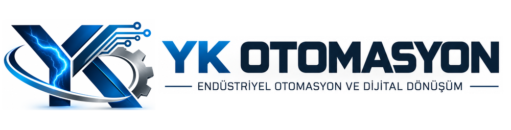

TURKO STUDIO
PLC, HMI ve SCADA mühendislik platformunun demo videosu. Videoyu doğrudan bu sayfadan izleyebilirsiniz.
Videoyu tam ekranda aç
YK OTOMASYONEndüstriyel otomasyon yazılımı ve uzaktan izleme teknolojilerine yönelik demo çalışmalarımızı keşfedin.
PLC, HMI ve SCADA mühendislik platformunun demo videosu. Videoyu doğrudan bu sayfadan izleyebilirsiniz.
Videoyu tam ekranda açPLC bağlantı ekranı, makine görseli, proses göstergeleri ve tarih-saat filtreli grafikli PDF raporlama demosu.
Cloud arayüzüne doğrudan gir Videoyu açBilgilendirme: TURKO CONNECT arayüzündeki PLC bağlantısı ve geçmiş proses verileri demo/simülasyon amaçlıdır; gerçek cihaz bağlantısı değildir.
Videolar tamamen sessizdir; ses kanalları bulunmaz.